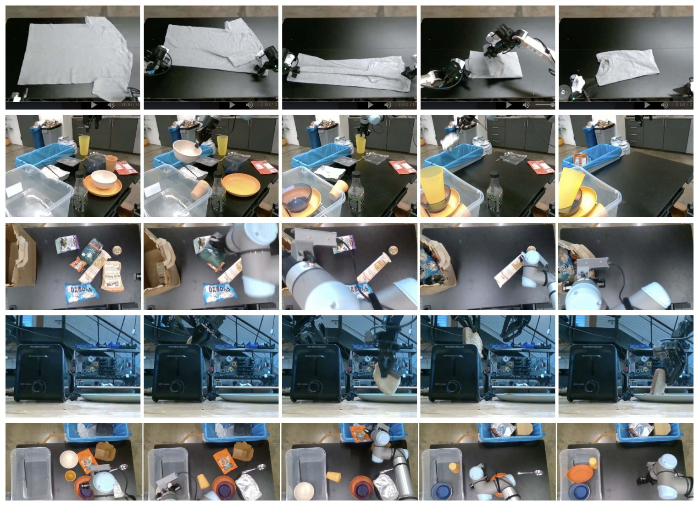
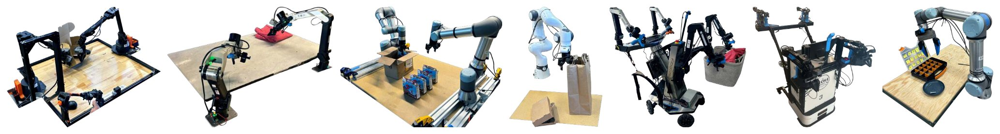

PAPER WALKTHROUGH · 论文图解 · 系列第 6 篇 · 前传
π0：一切开始的地方
2024 年 10 月，Physical Intelligence 发布 π0——第一个把「VLM 骨干 + 流匹配动作专家」定型的通用机器人策略。本系列 π0.5 / π*0.6 / π0.7 的一切，都从这套骨架长出来。
Physical Intelligence·arXiv 2410.24164 · 2024.10·10,000 小时 · 7 平台 · 68 任务

论文原图 · Fig 6（照片组）—— 开箱评测五连：叠 T 恤、收桌（易/难）、装杂货袋、从烤面包机取吐司。预训练后直接用语言指挥，不做任何任务微调。
{{ hero }}
第 00 章 · TL;DR
十秒版：π0 立下的三块基石
2024 年的难题：VLA 用离散 token 出动作（RT-2 / OpenVLA 一系），慢且粗糙，够不着50Hz 的灵巧操作（叠衣服这种活，夹爪每秒要做几十次微调）。π0 的答案成了此后所有 π 系模型的地基：
基石 ① 架构
VLM + 流匹配动作专家
PaliGemma 3B 管「看和想」，旁挂 300M 专属权重管「手」，用流匹配吐出 50 步连续动作块——精度和多峰分布全都要。
基石 ② 配方
预训练 / 后训练分工
照抄 LLM 的成功学：先在杂而广的数据上学「什么都会一点 + 会从错误恢复」，再用少量高质量数据练「流畅精熟」。
基石 ③ 规模
当时最大的操作数据集
10,000 小时 · 7 种机器人 · 68 个「宽任务」+ OXE 开源数据。证明了机器人也有「大力出奇迹」的路线。
第 01 章 · FLOW MATCHING ★ 核心机制
流匹配：动作从噪声里长出来
为什么不用离散 token 出动作？叠衣服需要高频、连续、多峰的动作分布——「从左边抓」和「从右边抓」都对，但平均一下就是灾难。流匹配（扩散的直系亲属，见 Transformer 篇采样章与 WAM 篇）天生擅长这个：
{{ flow }}
L(θ) = E‖ vθ(Aτt, ot) − (At − ε) ‖² ， Aτt = τ·At + (1−τ)·ε
At = 未来 H=50 步的动作块 · 给它按比例 τ 掺噪声，训练网络预测「去噪方向」A−ε
τ 不均匀采样，故意偏向高噪声区（Beta 分布）——低噪声时预测太容易，把训练算力花在难处
小结
▸ 一次生成 50 步动作块，开环执行——不做时序集成（试过，更差）
▸ 推理 10 步积分，观测前缀走 KV cache，消费级 GPU 几十毫秒出一块
▸ 这套「流匹配出动作」被 π0.5/0.6/0.7、WAM 全线继承
第 02 章 · ARCHITECTURE
架构：一个大脑，两套权重
灵感来自 Transfusion（一个 Transformer 同时用交叉熵和扩散两种损失）。π0 更进一步：给机器人专属的 token（状态 + 动作）配一套独立的小权重——像两个专家的 MoE：图文走 3B 的 VLM 权重，动作走 300M 的「动作专家」，注意力互通但参数分家。实测比共用权重更强：
{{ arch }}
跨本体的补齐术
7 种机器人维度不一（7 维单臂到 18 维移动双臂）：一律零填充到 18 维；相机不足 3 路的把空位遮掉。粗暴但有效——后来 Ego-Pi 为塞 58 维灵巧手另想了交错术（见第 ③ 篇）。
注意力布局
观测（图像+文字+状态）是前缀；50 个动作 token 之间双向注意力（整块一起去噪，不分先后），并能看到全部前缀。前缀的 KV 在 10 步积分间复用——省 10 倍前缀计算。
第 03 章 · DATA & RECIPE
数据与配方：杂粮打底，细粮收尾
{{ data }}

论文原图 · Fig 5（照片组）—— 7 种平台同锅共训：UR5e、双臂 UR5e、Franka、双臂 Trossen（ALOHA 式）、双臂 ARX/AgileX、移动 Trossen/ARX、移动 Fibocom。
小结
▸ 预训练数据要「广」（教会恢复与应变），后训练数据要「纯」（教会流畅精熟）
▸ 任务定义是「宽任务」：一个 bussing 覆盖无数物体组合——68 个任务 ≠ 68 个动作
▸ 配比按 n0.43 降权大数据集，防止叠衣数据一家独大
第 04 章 · LANGUAGE
语言：VLM 底座到底买来了什么
π0 训练了一个不用 VLM 初始化的小兄弟 π0-small 当对照。语言评测里给三种指挥方式：只给总任务（flat）、人类逐步下指令（human）、高层 VLM 自动下指令（HL，SayCan 式——π0.5 分层推理的前身）：
{{ lang }}
小结
▸ π0 听得懂细指令 → 人类/高层指挥都能显著加分
▸ π0-small 听不太懂 → 给它配指挥也白搭：语言能力是 VLM 预训练买来的
▸ 「高层想、低层做」在这里初见雏形，π0.5 把它写进同一个模型
第 05 章 · RESULTS
实验：三组证据
{{ results }}
* 条形为按论文图 7/11/13 结论的定性重绘（相对高度示意），非原始数值。
第 06 章 · LEGACY
遗产与边界
论文自己承认的未知
▸ 每个任务要多少数据、什么组合最优——没有公式
▸ 哪些任务超出当前方法能力范围仍不清楚
▸ 可靠性距离实用还有差距（正是 π*0.6 两年后去解的题）
▸ 陌生环境泛化未系统评测（π0.5 接棒）
它定下的路线
▸ VLM 骨干 + 流匹配动作专家 = π 系不变骨架
▸ 预训练/后训练两段式 = 机器人版 LLM 配方
▸ 跨本体同锅共训可行 → π0.5 的异构配方、π0.7 的涌现迁移
▸ 语言接口 → 分层推理 → 提示词工程的演化起点
一句话回顾全篇
π0 = PaliGemma 3B + 300M 流匹配动作专家，在 10,000 小时、7 平台、68 宽任务 + OXE 上预训练，再按需后训练——第一次证明「互联网语义 + 高频连续控制」可以住进同一个模型，叠衣、收桌、装箱从此有了通用底座。此后的每一篇，都是在回答它留下的问题。
— 完 · 万丈高楼，平地起 —